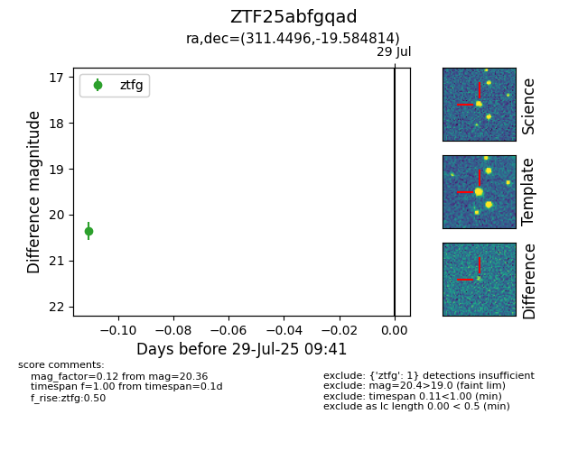

Target ZTF25abfgqad at 2025-07-29 09:41, see:
FINK: fink-portal.org/ZTF25abfgqad
Lasair: lasair-ztf.lsst.ac.uk/objects/ZTF25abfgqad
ALeRCE: alerce.online/object/ZTF25abfgqad
alt names
ZTF25abfgqad (ztf,fink)
coordinates:
equatorial (ra, dec) = (311.4496,-19.58481)
galactic (l, b) = (26.5353,-33.64895)
photometry
last ztfg=20.36
1 ztfg detections
